22.10.2026, abends. Was du mit „passt" bestätigt hast, steht unten im grünen Block und ist aus den Fragen raus. Alle Bilder bei 375 px aus Kopien von Stand 12b.
Deine Anmerkung: Die Erklärung darf das Eingekringelte nicht überlappen. Liegt das Ziel in der unteren Hälfte, steht der Kasten jetzt oben.
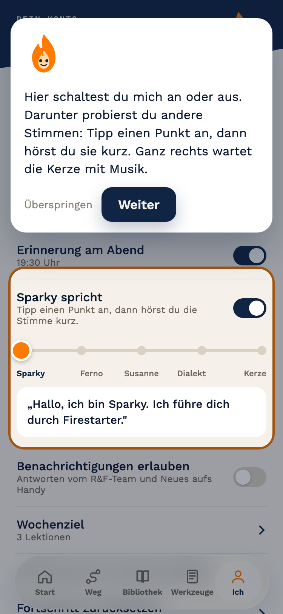
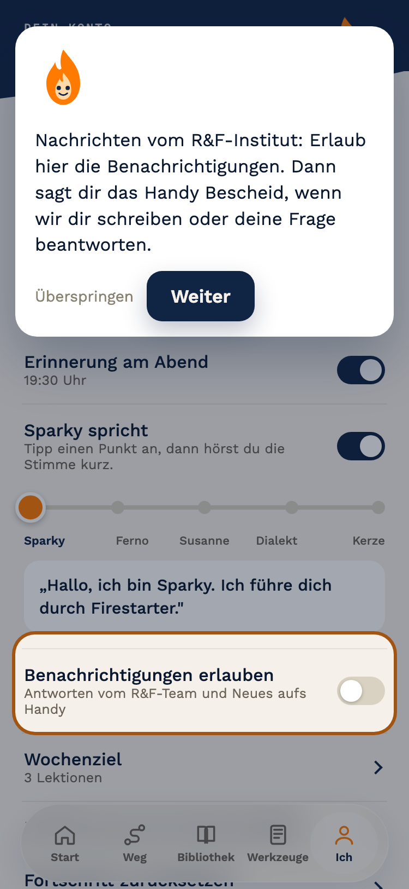
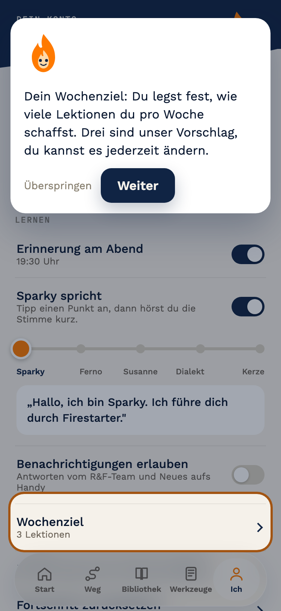
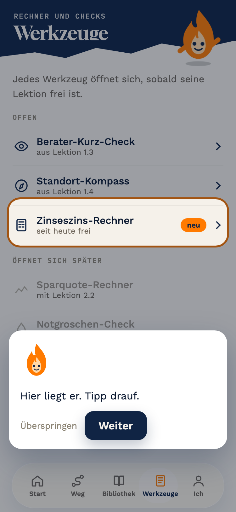
Aus: die Zeile sieht aus wie „Erinnerung am Abend". An: der Regler klappt auf. Der Titel trägt den Namen der gewählten Stimme. Dialekte mit Namen (Codex-Vorschlag): Franz, Uli, Katrin, Toni, Klaas. Jede Stufe spricht beim Antippen kurz, die Flamme oben wechselt sofort. Die Stimmen sind erzeugt und in der klickbaren Fassung drin.
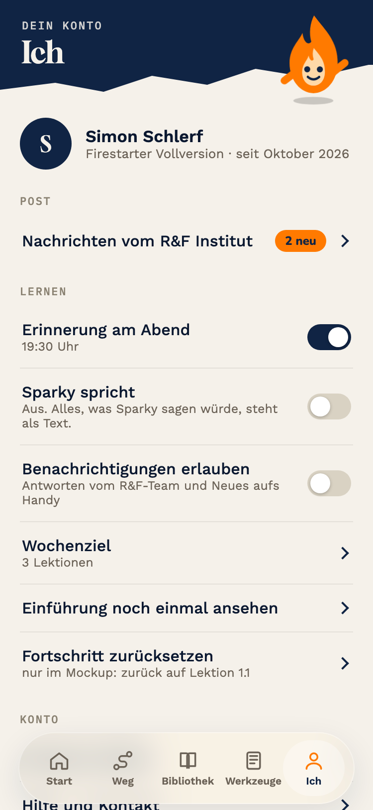
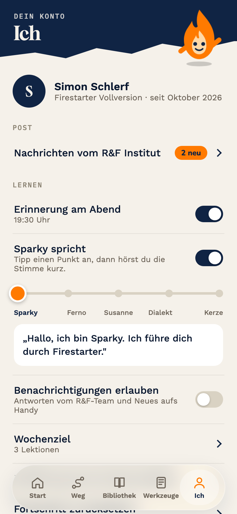
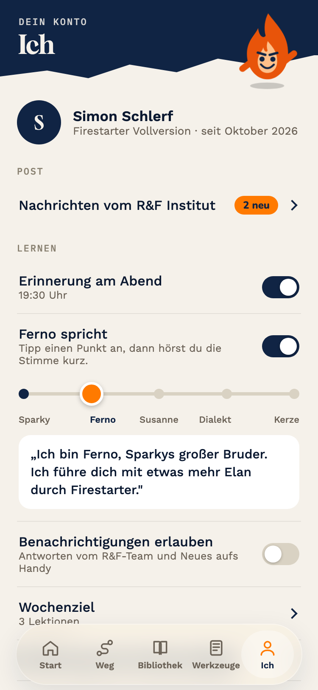
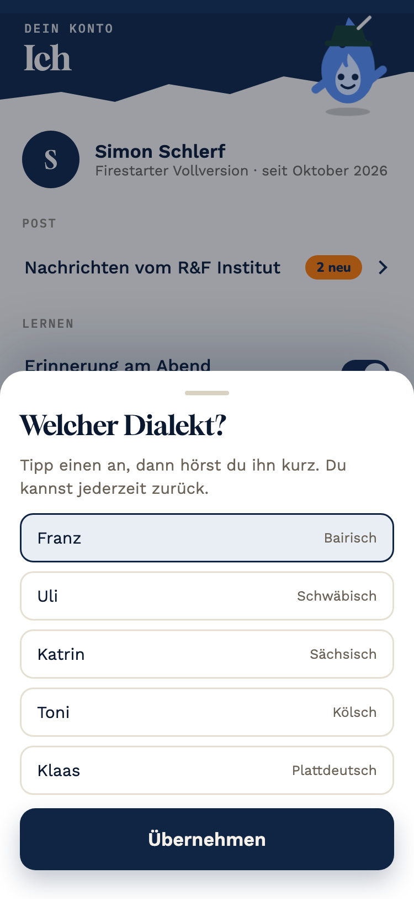
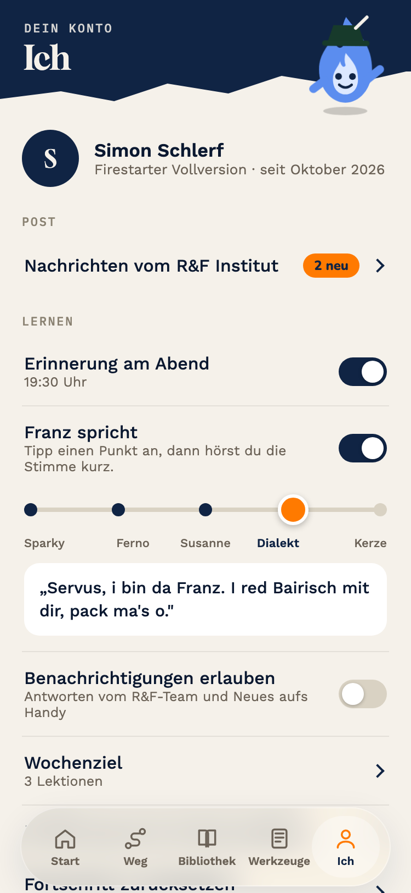
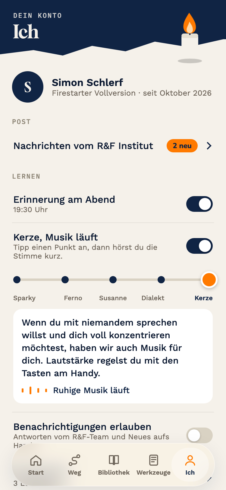
Aus ist der normale Sparky, er spricht nur nicht. Fünf Stufen bleiben.
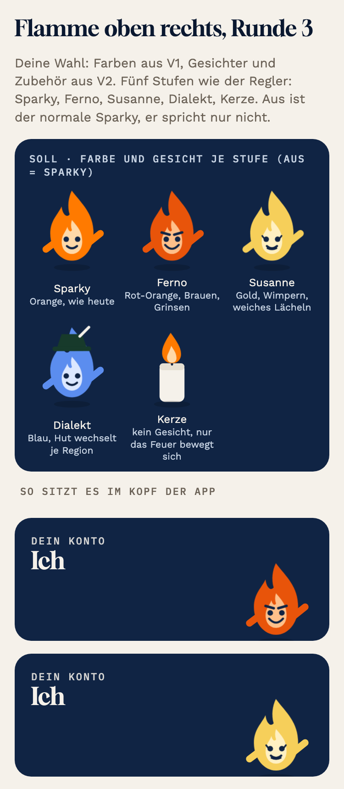
Gegenlauf mit eingefrorenen Kriterien: Codex gibt V11 die Note 10, deinem Satz V10 eine 6 (Perspektivbruch „ihn" statt „mich", weil Sparky den Satz selbst spricht). Claude stimmt zu, Mindestnote 9. Entschieden: V11.
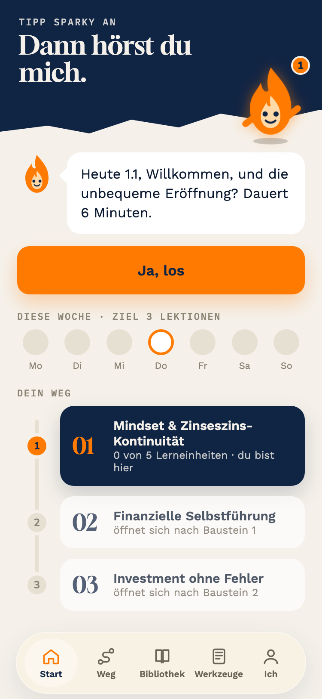
Jede Welt öffnet ihre Seite in ihrer Farbe: drei Kennzahlen, Angebote mit Preis, ein Knopf. Blau und Grün führen zur Kasse, Gold zur Platzanfrage.
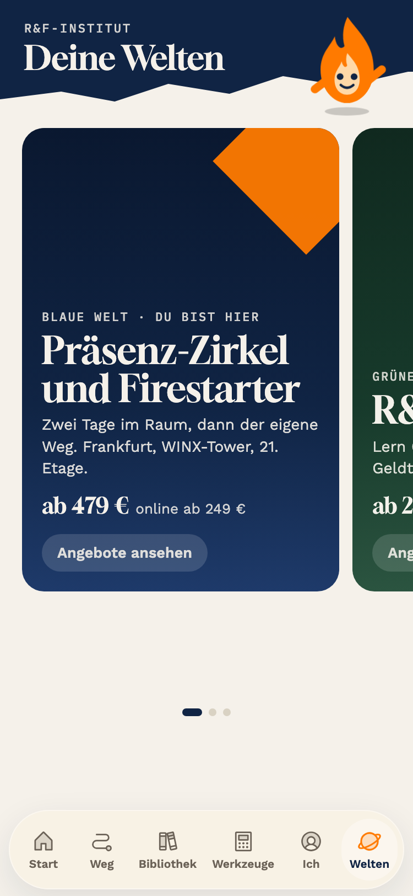
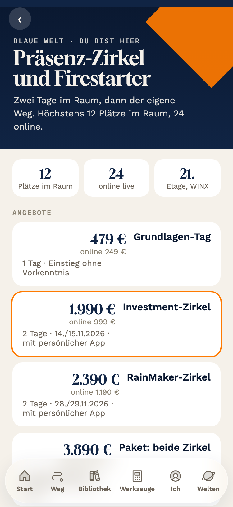
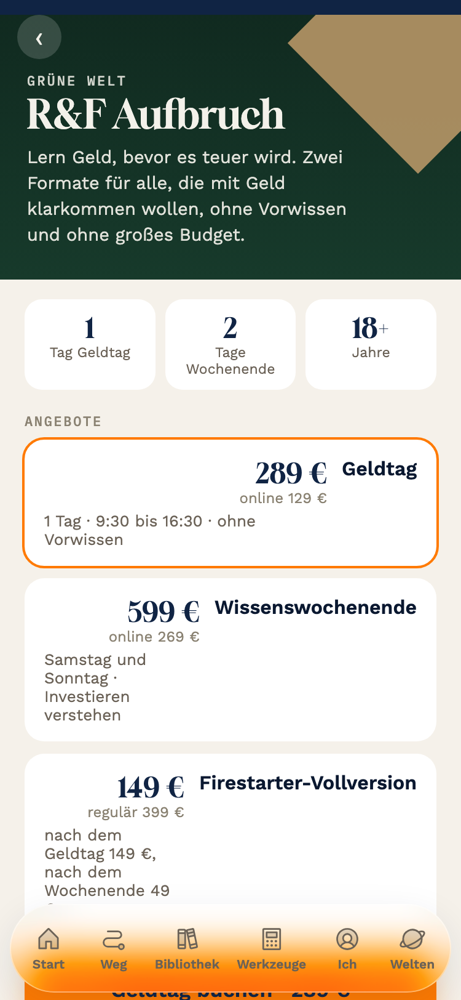
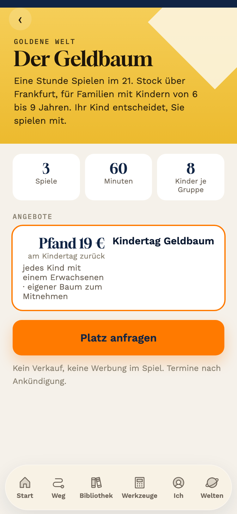
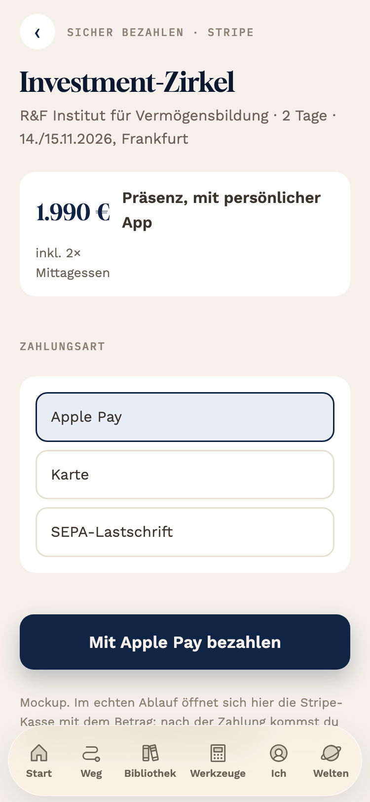
Erzeugt am 22.10. über ElevenLabs, 1.253 Zeichen, innerhalb des Monatskontingents. Sparky = Matilda, Ferno = Liam, Susanne = Sarah, Franz, Uli, Toni, Klaas = Stephan (deutsche Bibliotheksstimme) mit Dialektschreibung, Katrin = Laura. Ob der Dialekt trägt, entscheidet dein Ohr; die Texte sind nur Dialektschreibung, keine echte Dialektstimme.
4 Kerze mit Musik · 6 Gruß kürzer, Kopf gleich hoch · 7 Vor- und Nachname · 8 Welten V3 · 9 Leiste breit, Symbole I2 (Phosphor Duotone) · 12 Post mit Fenster · 13 Video-Karte mit Beispiel · 14 Werkzeuge W1 · 16 Videos · Musik. Diese Punkte erscheinen hier nicht mehr, sie gehen in den Bau.
Deine „passt" zu allen Blöcken dieser Seite sind eingetragen. Die fertige App mit allen Bausteinen liegt im Gesamtpaket: